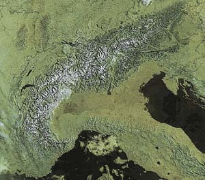

Le Alpi sono la catena montuosa piu' importante d'Europa. Si chiamano in francese Alpes, in tedesco Alpen, in sloveno Alpe. Sesto Pompeo Festo nel suo Primo Libro attesta che il nome deriva da ALBUS (bianco) che i Sabini pronunciavano Alpus e indicava il colore sempre bianco della catena innevata anche durante la stagione estiva.
Per convenzione le Alpi iniziano a ovest del Colle di Cadibona, anche se in realta' il confine geologico e' posto nei pressi di Genova ed e' costituito dal Gruppo di Voltri, terminano a ovest della citta'di Vienna coprendo una distanza di circa 1.300 km a forma di arco tra l'Italia Settentrionale, la Francia sud-orientale, la Svizzera, il Liechtenstein, l'Austria, il sud della Germania, la Slovenia e l'Ungheria occidentale. Tra Verona e Monaco di Baviera raggiungono la larghezza massima.
